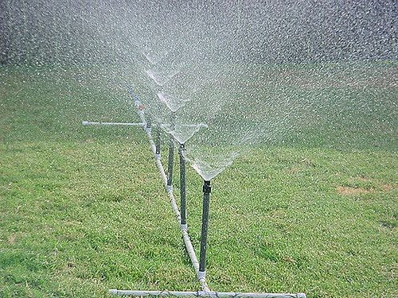

نظام مرشات المياه التلقائية هو نظام لمكافحة الحريق بالماء كوسيط للإطفاء، يتدفق هذا الماء من رؤوس المرشات تحت ضغط وتدفق محسوبين لتغطية موقع الحريق، وتوزع هذه الرؤوس قريبة من السقف، وتعمل على تغطيـة المساحة أسفلها كاملة بالماء، وتغذى هذه الرؤوس بواسطة شبكة من ﹰ، ويتوفر للنظام مصدر للمياه يعمل على تزويده بمعدل تدفق وضغطسبت أقطارها هندسيا الأنابيب لدرجة الخطورة للمنشأةوكمية كافية لإطفاء الحريق طبقا